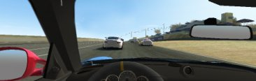
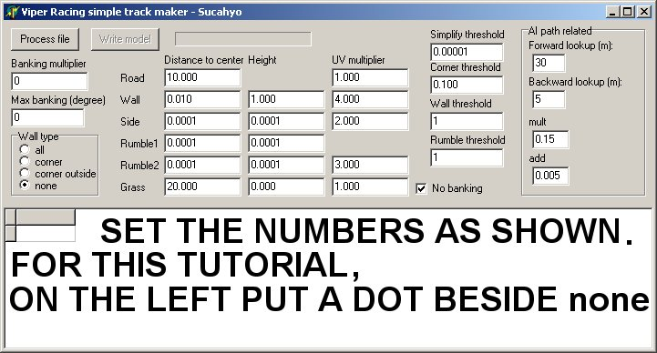
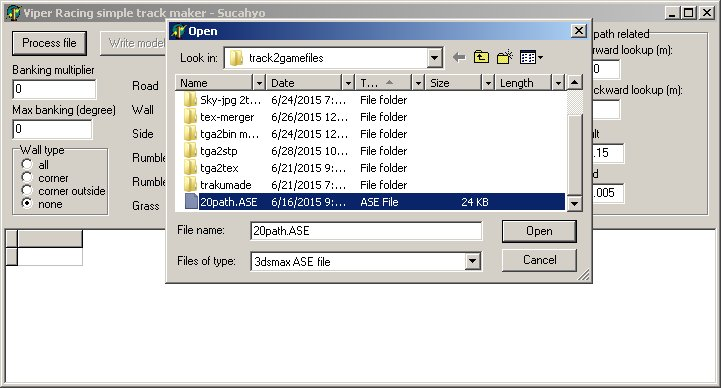
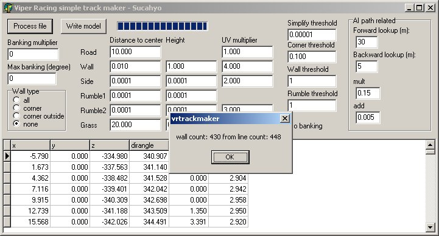
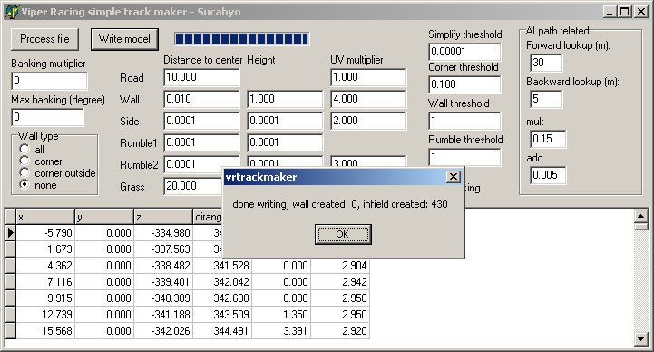
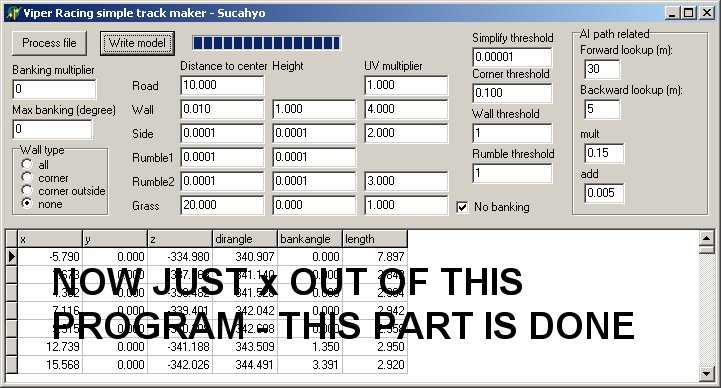
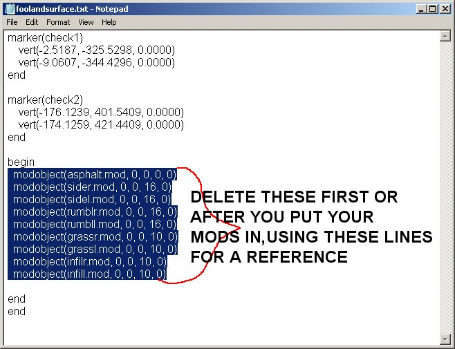
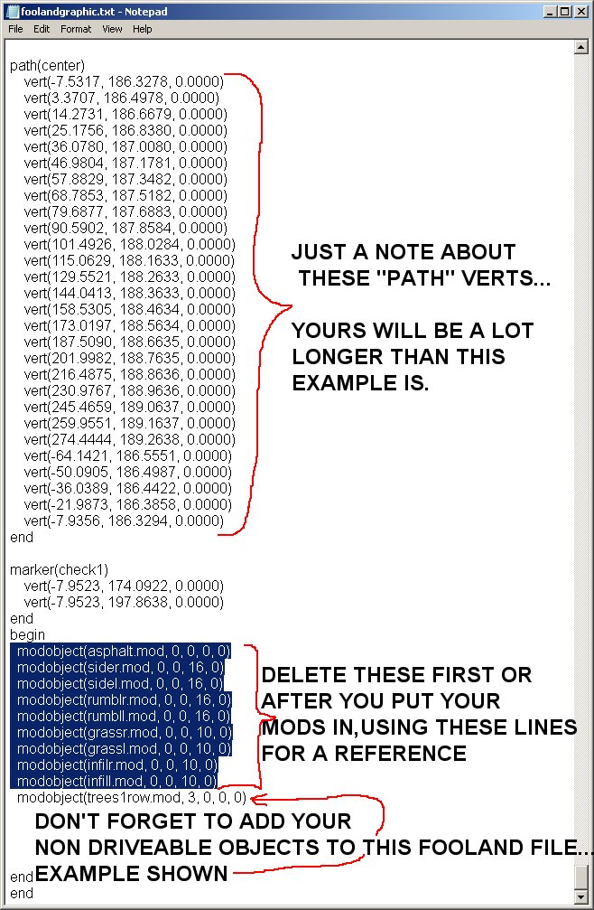
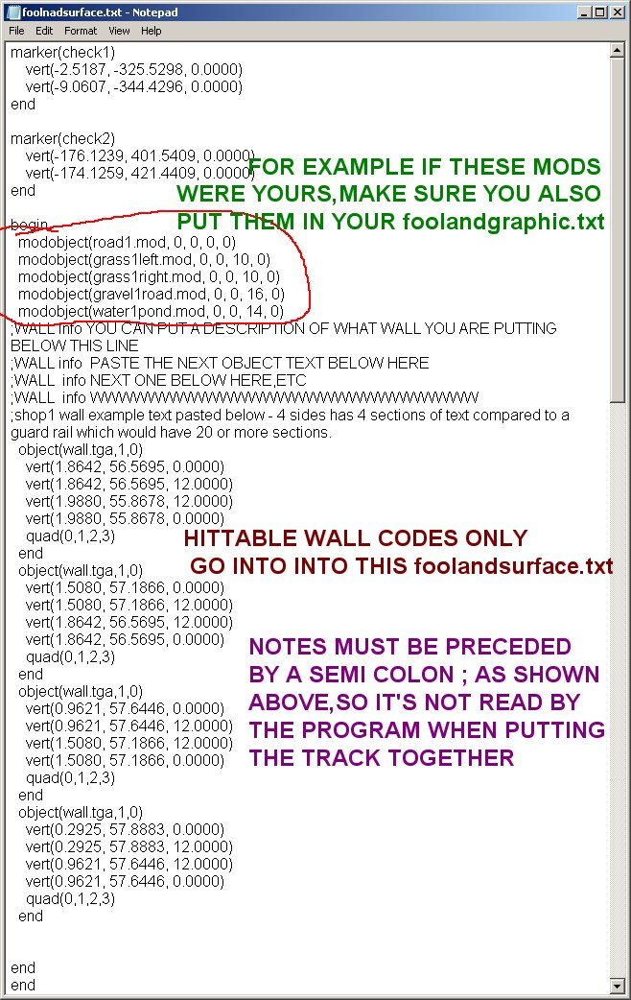
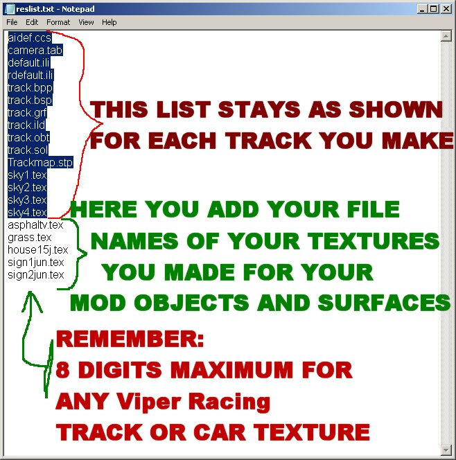

vnovak.com, captured 13 February 2020. Preserved in viper-racing-modding; see README.
The first tut covered making a "path" for your track in 3dsMax3.1.Links to all files required are there also.
vrtracktogametutpart1.html
The second part dealt with Zmodeler 1.07. Here is what you do last.

The following images will explain the final steps in detail on how to get your track into Viper Racing.
This final step is detailed below:
All working files and models and textures should be ready to go at this point.
Now double click the "vrtrackmaker.exe" and adjust the settings as shown in the next image:

Click the "Process File" button,click on your ase path file you exported from 3dsMax,click "Open"

If you get this box pop up click ok to go to the next step,BUT if you get an error box.....oops....
Usually the error means the ase file you made in 3dsMax has a small problem
( Viper Racing game engine is real fussy )
So if you get an error,just import the path back into 3dsMax and look at the start
line verticies...try to get the start vertex and the 1 on the left and right to be a straight line.
Then "normalize spline" again and export the ase to try again.

Now click the "Write model" button and click ok on the pop up.

This part is done.....x out of it.

Delete the following .mod files that were just created inside the "track2gamefiles" folder
as these are not required for this type of track we are making for this tutorial:
grassl.mod,grassr.mod,asphalt.mod,infill.mod,infilr.mod,rumbll.mod,rumblr.mod,sidel.mod and sider.mod
We are just using Sucahyos vrtrackmaker.exe program to put our track together that we previously made
in 3dsMax or Bobs Track Builder or another 3d making program.
On a side note:
Sucahyos "vrtrackmaker.exe" program was initially made to make simple,
quick tracks for Viper Racing using a 3dsMax ase file ( track path ),but that's another tutorial altogether.
Also delete these lines ( as shown in the "foolandsurface.txt" image below ) in both fooland text files and replace with your own.
Or if you want, use these lines as a reference first and delete them after entering your mod names in.
Example of your road surface model would be:
modobject(road1.mod, 0, 0, 0, 0)

"foolandgraphic.txt" info in the image below:


Now you are finally ready to put your track together and if you don't run into errors you can be driving on it
in less than 2 minutes.
In your working folder,in this case "track2gamefiles", double click the "Make-track.bat" file to start
the process.
When you see "click any key to continue" make sure you don't see any errors in the section
of text above that.
If you do you should try to correct them at this point so just x out of it OR
you can continue anyway and after the bat file is done,inside your generated "tra" folder,
check the size of the trackname.tra file.
IF it is 0 bytes then one or more errors you had was serious enough to cause the
track not be be made.
If it has,for example, 8,225 bytes, then it is probably ok,but to be sure put it in your "Viper Racing/Data" folder,
fire up trackman and replace any one of the originals,exit trackman and try your track in game to see
if any objects are missing or you might have an "invisible hole" in the track caused by an overlapping polygon.
Best idea is to drive completely around the track on the right side on the first lap,
then on the left side for the next lap.
Usually you will find an "invisible hole" that way.
If you drive on an area with an overlapping polygon it will cause your car to fly up in the air or
fall through it.
Import the track into Zmodeler 1.07 to find and fix the overlapping polygon or polygons.
Usually I find one of my grass polygons that in right next to the track is overlapping
one road surface poygon.
Sometimes you must zoom in a lot to see the overlap in Zmodeler.
In both of your fooldand text files here are the codes and explanations:
The first 4 "modobject"s below can be driven on ( code is zero on the first digit ).
The fourth one" (trees-buildings-signs-etc.mod, 3, 0 , 0, 0)" has a 3 in front of 3 zeros.
This 3 code tells the game that it is not driveable or hittable and can sit on top of a surface that is
driveable.You cannot put a driveable object on top of another driveable surface or
the game creates an invisible hole.
Overlapping polygons also creates an invisible hole.
Only this code "3, 0, 0, 0" as shown below is acceptable for trees,signs...etc.
The 3rd number in the "driveable" surfaces give it a different "feel" to it.
Third number 0 makes surface like pavement or concrete.
Third number 10 makes surface like sticky grass and slows cars down real quick.
Third number 16 makes surface like driving on a gravel road,slows cars just a tad.
Third number 14 makes surface like water,a car would stop and float if you drove onto that surface.
modobject(pavement1track.mod, 0, 0, 0, 0) modobject(sticky-grass.mod, 0, 0, 10, 0) modobject(gravel1road.mod, 0, 0, 16, 0) modobject(any-water.mod, 0, 0, 14, 0) modobject(trees-buildings-signs-etc.mod, 3, 0, 0, 0)
One quick note about all your textures ( tganame.tex ) for all your objects and surfaces.
All your converted tgas ( *.tex files ) must be put into your mkres folder,also add the tex names
below the "sky4.tex" .
All file names from "aidef.ccs" to "sky4.tex" inclusive MUST stay listed in the "reslist.txt" file as is.
Example is shown below:

If you have questions you can post on the forum here or talk to me ( Val ) in the Team Speak 3 program
we use for our "racefinder" after 7 pm cst 7 days a week.Info for the Team Speak 3 channel is here: